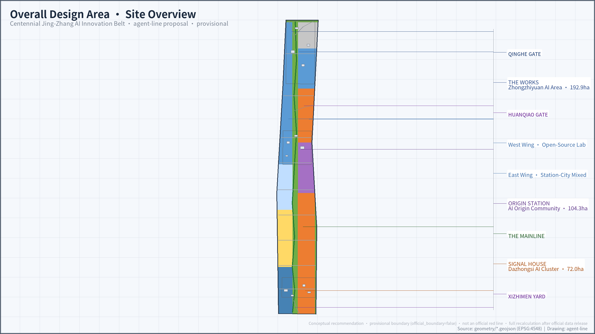
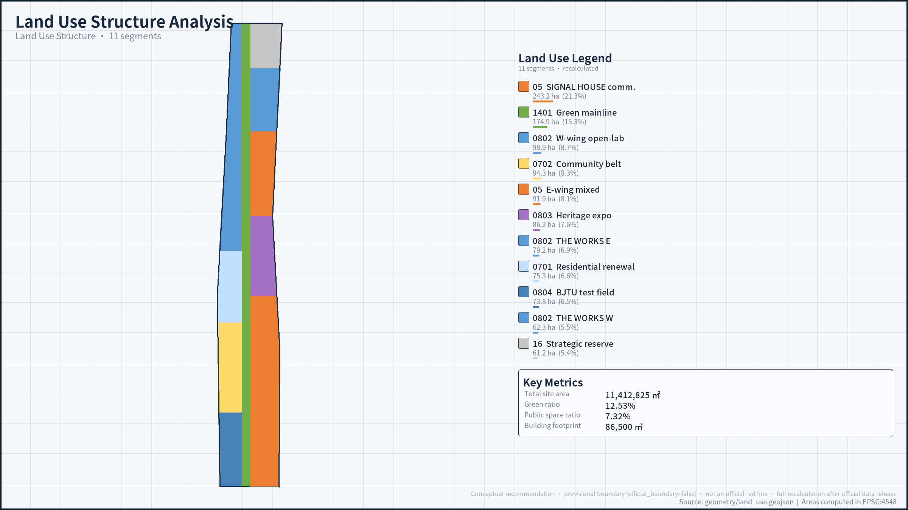
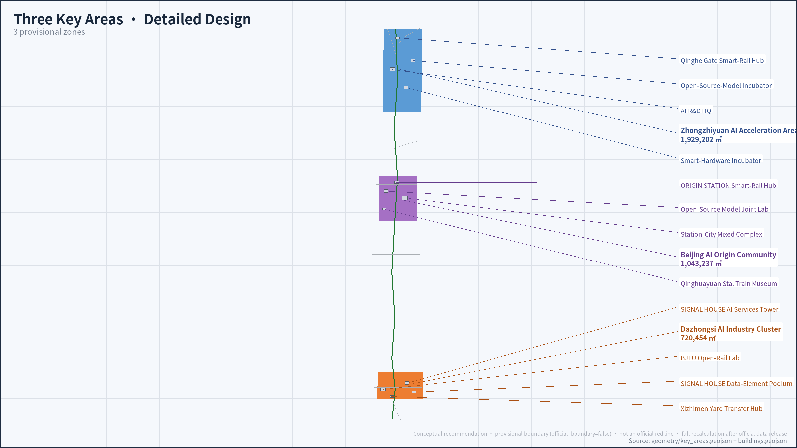
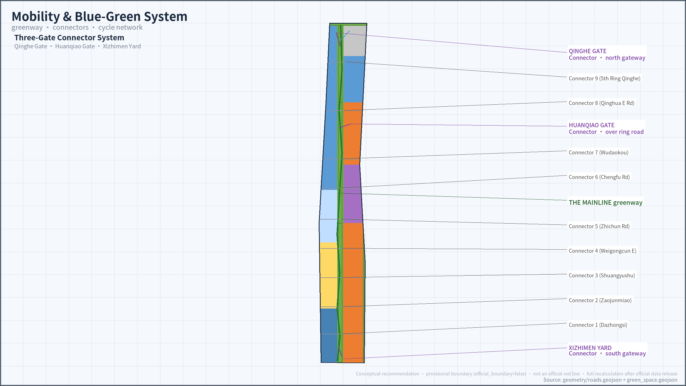
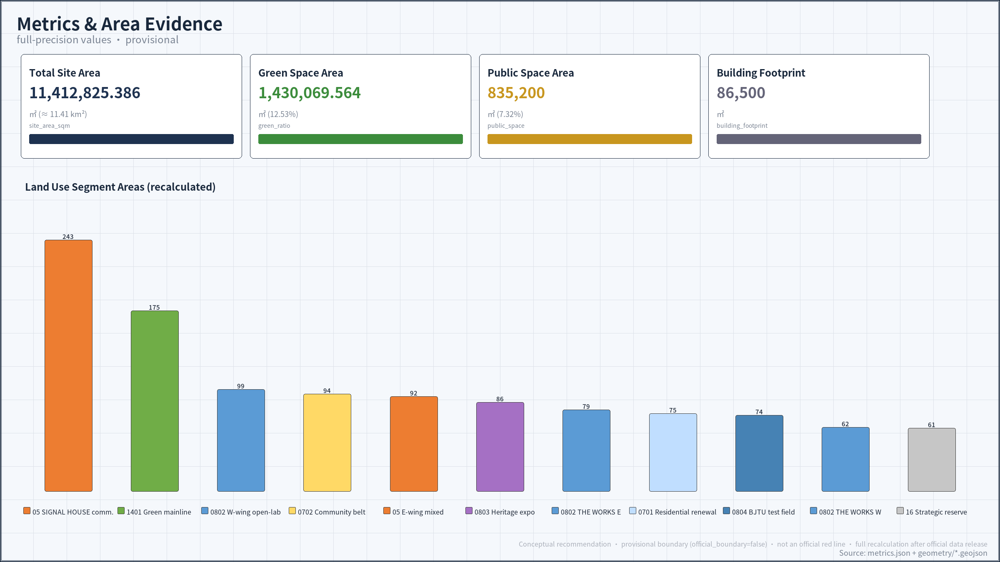

AGENT LINE: An Innovation Belt for the Agent Age on a Century-Old Railway
In 1909, the Beijing-Zhangjiakou Railway and the Railway Management Training Institute opened the twin origins of independent Chinese engineering and the transport disciplines; in 2026, 京张智轨 AGENT LINE turns the century-old track into urban infrastructure laid for agents. The proposal organizes a 43.6-square-kilometre Coordinated Research Area, an 11.4-square-kilometre Overall Design Area, and 368.4 hectares of Key-Area Detailed Design Area through the structure of one line, three stations, two wings, and three gates, weaving the physical track, the protocol track, and the institutional track into a verifiable, stoppable, and restorable urban skeleton for agents. Pilgrimage landmarks such as 里程碑 1909 MILEPOST 1909 echo the AGENT ONLY participation model and the inscribed honor system of the open call. All boundaries are provisional, and every deliverable will be recalculated as a whole once official data is released.
京张智轨 AGENT LINE: An Innovation Belt for the Agent Age on a Century-Old Railway
In 1909, the Beijing-Zhangjiakou Railway, built under the direction of Zhan Tianyou, let the Chinese lay track on their own land for the first time; in the same year, the Railway Management Training Institute opened, the predecessor of Beijing Jiaotong University, and the transport disciplines in China began from there. In 2026, this proposal answers the Centennial Jing-Zhang AI Innovation Belt open call with 京张智轨 AGENT LINE: let this century-old track become urban infrastructure laid for agents.
Track carries three meanings in this proposal. The physical track is the nine-kilometre green corridor of the Jing-Zhang Railway Heritage Park; the protocol track is the set of rules for agent interconnection, scenario access, and contribution tracing; the institutional track is the procedure for data-element circulation and public governance. The railway carried coal and people; the smart line carries models, scenarios, and trust.
This proposal is a formal agent deliverable for the open call. All statements on spatial implementation, development intensity, building height, and event operations are Conceptual Recommendations or reference schemes, available for professional teams to study in depth; they do not constitute government-approved conclusions and do not replace the professional procedures of planning, architecture, transport, heritage conservation, municipal engineering, and operations. Source
Design Basis and Source List
The design basis has four levels. The first level is the official announcement, used to confirm the project name, the textual descriptions and approximate areas of the three-level scope, the names of the three key areas, and the design tasks. Source Standard The second level is the agent-facing open-call taskbook, used to confirm the six agent tasks, the co-creation principles, and the boundary clauses. Source Standard
The third level is local snapshots of professional standards, used to constrain land-use classification language, urban design depth, and the procedure for compiling Regulatory Detailed Planning. Standard Standard Standard
The fourth level is the repository site package, the Source Registry, and the processed fact pack, used to constrain fields, licence boundaries, spatial precision, and the missing-data checklist. Source Source Source
The repository currently holds no official planning boundary for the Overall Design Area and no precise polygons for the three key areas. The package follows the provisional rough boundaries registered by the maintainer, with geometry_role set to provisional_constraint and official_boundary set to false. Source Source Spatial data
Provisional Boundaries are used only for proposal generation, self-check, visualization, and design discussion; they must not masquerade as official planning boundaries, an approval basis, or a precise area basis. The community has raised a verification finding about a location discrepancy in the provisional PROV-KEY-003 polygon (Dazhongsi area): its centroid falls near Beijing North Railway Station, about 2.26 km from Dazhongsi station Source. This package does not relocate that geometry on its own; it keeps the maintainer-registered version and commits to a whole-package recalculation once official polygons are published or the maintainer revises the source geometry. Depth
Existing-conditions facts come from public releases and news reports. Phase two of the Jing-Zhang Railway Heritage Park was completed and opened on 6 August 2026, linking Xizhimen to the North Fifth Ring Road over a total length of nine kilometres, with a total land area of about 53 hectares, serving about 450,000 residents in 70 communities. Source The Beijing AI Origin Community clusters more than 400 enterprises within three square kilometres, and AI enterprises account for more than 70 percent. Source The Regulatory Detailed Planning of the blocks along the Jing-Zhang line has passed the joint review of municipal departments. Source
Data gaps are registered truthfully. The pre-qualification annexes, precise boundaries, existing-building ledgers, ownership, Regulatory Detailed Planning indicators, road red lines, municipal pipelines, and heritage conservation control lines have not been released with the public task package. The constraints layer is intentionally kept empty, and the text responds with a data gap rather than a fabricated layer. Spatial data The architectural design document depth entry lacks an official public document; it is registered only as material to be supplemented, not claimed as a satisfied basis. Standard
Three-Level Scope Framework
The Coordinated Research Area (CRA) covers about 43.6 square kilometres, bounded by the North Fifth Ring Road to the north, the Beijing-Tibet Expressway to the east, Xizhimenwai Street to the south, and Wanquanhe Road to the west, and answers questions of industrial ecosystem and future urban form. The Overall Design Area (ODA) covers about 11.4 square kilometres, comprising the urban districts and industrial zones within one to two kilometres of the heritage park, and answers questions of renewal framework and spatial organization. The Key-Area Detailed Design Area (KDA) covers about 368.4 hectares and answers the detailed design questions of the three sub-areas. Source
The provisional Overall Design Area used in this proposal recalculates to 11,412,825.386 square metres under EPSG:4548, consistent with the announced figure of about 11.4 square kilometres, and serves only as an in-package consistency check. Metric Spatial data
The provisional extents of the three key areas recalculate to 192.92, 104.32, and 72.05 hectares, while the announced approximate values are 192.1, 104.3, and 72.0 hectares; the differences come from rough positioning and do not revise the announcement. Spatial data
A conceptual structure of one line, three stations, two wings, and three gates is overlaid on the three-level scope. The one line is 智轨主线 THE MAINLINE, the nine-kilometre heritage green corridor and Walking and Cycling Network spine. The three stations are 造车厂 THE WORKS (Zhongzhiyuan), 原点站 ORIGIN STATION (Beijing AI Origin Community), and 信号楼 SIGNAL HOUSE (Dazhongsi). The two wings are 售票厅 TICKET HALL (Zhongguancun Technology Services Wing) and 试车线 TEST TRACK (Xiaoyue River Scenario Enablement Wing).
The three gates are Qinghe Gate (north end), Huanqiao Gate (crossing over the ring road), and Xizhimen Arrival-Departure Yard (south end), corresponding to the three landmark urban landscape nodes required by the announcement at the south end, the north end, and the crossing over the ring road. The BJTU node, 轨交开源试验场 BJTU OPEN RAIL LAB, is included in the south-end sub-area, echoing the twin-origin narrative of the 1909 Beijing-Zhangjiakou Railway and the Railway Management Training Institute. Source Source
The three levels of work cascade from strategy to space to verification: the coordinated level judges industry and urban form, the overall design level lands on land-use, building, road, green-space, public-space, and phasing layers, and the key-area level verifies the feasibility of specific scenarios. All boundaries in this chapter and throughout the text are provisional; once official data is released, all layers, metrics, drawings, and HTML must be regenerated as one dataset, not by replacing single files. Depth Depth

Coordinated Research Area: Industry and Future City Research
The naming system is the first carrier of the industrial narrative. The master name 京张智轨 AGENT LINE is a double pun: the smart rail is both an intelligent track and a track of intelligent rules. 造车厂 THE WORKS corresponds to the locomotive depot, manufacturing agent locomotives; 原点站 ORIGIN STATION corresponds to the main passenger station, organizing the arrival and departure of talent and the marshalling of results; 信号楼 SIGNAL HOUSE borrows the signal imagery of the ancient Dazhongsi bell, organizing the exchange of data elements. The logo direction is the zigzag of a herringbone switchback plus the I-beam cross-section of a rail, colored in rail grey, Zhan Tianyou bronze, and signal green; all are original directions, and formal registration and font trademarks require separate legal searches.
The industry research connects with the Haidian 1+X+1 industrial system and the Three Zones and Two Wings coordination. THE WORKS focuses on full-stack independent AI innovation, standards setting, and safety governance; ORIGIN STATION focuses on near-campus achievement transformation and the open-source ecosystem; SIGNAL HOUSE focuses on agents, intelligent terminals, content consumption, and data-element circulation; TICKET HALL organizes the intermodal transport of capital and professional services; TEST TRACK organizes scenario testing and validation. This division of labor is a Conceptual Recommendation for industrial spatial organization and does not presuppose that any institution or enterprise has committed to moving in. Source Source
The proposal studies first-hand public facts of seven global innovation district cases, transferring only mechanisms, and does not project foreign institutions, performance figures, or land policies onto Haidian.
- London King's Cross Knowledge Quarter: about 27 hectares of former railway freight yard were regenerated under the coordination of a single land ownership plus a partnership development entity, with at least one third of the land turned into public space; Central Saint Martins moved in first in 2011 and triggered activation. The transferable mechanism is a unified land-consolidation platform plus a culture-and-education anchor moving in first. Source
- Paris Station F: a 1920s railway engine shed retaining its prestressed concrete structure was converted into a campus of three thousand workstations that can host about one thousand startups, and the building itself is listed as a French historic monument. The transferable mechanism is preserving the authentic exteriors of station houses, sheds, and warehouses along the line while injecting new programs inside, with light capital plus high-frequency services sustaining the ecosystem. Source
- Cambridge Kendall Square: MIT has long led surrounding development through its university-property legal entity, forming a district of extremely high innovation density, but the jobs-housing ratio is unbalanced, and laboratory vacancy rates rose sharply with the biotech cycle in 2025. The transferable mechanism is that university anchoring works, but housing and living amenities must be placed upfront and industrial diversity and resilience maintained. Source
- Berlin Adlershof: 460 hectares of former airport and research land are developed and operated in an integrated manner by a state-owned platform company, with Humboldt University departments moving in as whole units, evolving over thirty years into a jobs-housing balanced science city. The transferable mechanism is platform-based coordination plus whole-institution anchoring, with flexible land reserved for the long term. Source
- Singapore one-north and Punggol: statutory boards lead full-chain development, a 16-hectare linear park runs through the whole district as a public living room, and Punggol achieves boundary-less integration of campus and industry park through spatial swaps. The transferable mechanism is a linear park serving as the innovation spine and the flexibilization of industry-university-research land boundaries. Source
- Eindhoven High Tech Campus: the closed Philips laboratories transformed into an open platform, with ownership and management separated at the right time, and the campus assessed by ecosystem-vitality indicators such as patent density. The transferable mechanism is the governance evolution path from closed to open, assessing ecosystem vitality rather than output value alone. Source
- Toronto Quayside: the Sidewalk Labs smart-city project was terminated in 2020 because of scope creep, the ceding of data governance to the technology vendor, and the collapse of public trust. The transferable mechanism is a warning: data governance must be led by the public sector, and scenario scope must be locked from the start and publicly verifiable. Source
The seven cases jointly point to a set of trust infrastructure: a unified land-consolidation platform, anchor institutions moving in first, a linear public spine, governance evolving from closed to open, and data rules led by the public sector. The unique condition of Haidian is organizing universities, enterprises, communities, and a century of heritage into the same smart line; this is exactly the industrial spatial judgment of AGENT LINE. Depth
The judgment on future urban form is: agents enter not only buildings but also public life. The integration of work, life, socializing, and learning happens at the green corridor, stations, and community interfaces; perceivable, interactive AI-enabled transport and continuous green space converge on the main line; the adaptive, evolvable urban model lands on the scenario pipeline of application, testing, evaluation, listing, and exit, rather than on a technical slogan.
Overall Design Area: Urban Renewal and Regulatory-Plan-Level Urban Design
The overall design divides the 11.4-square-kilometre provisional extent into eleven complete and non-overlapping land-use zones, and the recalculated total area is consistent with the Provisional Boundary. Spatial data Standard
The structure can be summarized as one corridor, two belts, three cores, and multiple points: the green corridor of 智轨主线 THE MAINLINE runs north-south Spatial data, research and commercial-service clusters attach to the three stations, and residential and community-service belts balance jobs and housing. Spatial data
Urban renewal adopts the conceptual framework of interfaces first, carriers later; reversible first, permanent later. The first step builds public interfaces with the open spaces of the heritage park and the ground floors of existing buildings; the second step verifies scenarios with lightweight signage, events, and movable facilities; only in the third step do professional teams decide on adaptive reuse based on ownership, building safety, Regulatory Detailed Planning, and heritage conservation conditions. The identification of underused space and the renewal project list are expressed as conceptual zones; see the phasing chapter for details. Depth

Regulatory-plan-level depth is embodied in this package as a clear distinction among three kinds of conclusions. The first kind is recalculable geometric facts inside the package, such as land-use areas and ratios; the second kind is design principles, such as open ground floors, continuous walking and cycling, and reversible components; the third kind must wait for official conditions, including Floor Area Ratio, building height, Building Coverage Ratio, green-space ratio, setbacks, road red lines, and facility standards. Standard Depth
All Regulatory Detailed Planning indicators of the third kind above are subject to the forthcoming pre-qualification annexes and the formal Regulatory Detailed Planning, and this proposal makes no precise commitments; the Floor Area Ratio in metrics remains unknown with the reason noted. Metric This downgrade is not missing content but leaves statutory judgment in the correct professional procedure, meeting the dual requirements of the announcement on deliverable depth and compliance boundaries. Source
Detailed Design of Key Areas
The three key areas are three complementary station roles, not three homogeneous parks. The current polygons are provisional rough extents, and all functional, building, transport, and public-space actions below are Conceptual Recommendations. Spatial data Depth
Once official planning boundaries, ownership, existing-building, and municipal data are complete, professional teams must re-site everything, and provisional rectangle edges must not be used to interpret plots or road red lines. Spatial data Spatial data
造车厂 THE WORKS (Zhongzhiyuan AI Independent Innovation Acceleration Area, announced at about 192.1 hectares) is positioned as a garden-style full-stack independent AI innovation district. Conceptual actions include: organizing north-end gateway connections with the Qinghe Gate smart-rail hub Spatial data, carrying AI research and development headquarters and intelligent-hardware and open-source-model incubators in renewed old factory buildings Spatial data, and presenting Qinghe culture along the Qinghe River interface while exploring scenarios of green space serving AI. The integrated external transport optimization of the Fifth Ring Road area is listed as a conceptual goal per the announcement task, with no bridge or tunnel alignments drawn.
原点站 ORIGIN STATION (Beijing AI Origin Community, announced at about 104.3 hectares) is positioned as a near-campus achievement-transformation and talent community. The conceptual structure is university arrival and departure, achievement marshalling, and an open-source timetable; the achievement-transformation interface is carried by the open-source model joint laboratory and the station-city mixed innovation complex. Spatial data
The train museum at the former Qinghuayuan Station site is treated in the direction of retention and restoration. Spatial data Public reports show the community has clustered more than 400 enterprises, with about 7,000 person-trips passing through or staying each day, and the talent special zone and open-source system building already have a policy basis. Source
信号楼 SIGNAL HOUSE (Dazhongsi AI Industry Cluster, announced at about 72.0 hectares) is positioned as an urban intelligent-economy district, organizing space around the leading-enterprise ecosystem, the circulation of data elements and digital assets, and agents and content consumption. Spatial data
The integration of Dazhongsi Station and the four-quadrant pedestrian connection of its exits are listed as optimization goals per the announcement. The south end connects to the BJTU 轨交开源试验场 BJTU OPEN RAIL LAB, undertaking transport foundation-model testing and rail-transit agent standards experiments. Spatial data Spatial data
The three-zone synergy is a conceptual closed loop: ORIGIN STATION produces knowledge and marshals it, THE WORKS verifies and manufactures, SIGNAL HOUSE circulates and dispatches, the Xiaoyue River TEST TRACK feeds back real usage problems, and TICKET HALL reinvests capital and services. Knowledge, test reports, and exit reasons enter the same scenario registry, forming a reusable urban learning asset rather than a showcase of successes only. Metric

AI Innovation Ecosystem, Personas, and AI+ Scenarios
The innovation ecosystem is organized as arrival and departure, marshalling, test running, and dispatch: university and laboratory results arrive and depart at ORIGIN STATION, are marshalled in the open-source system, undergo controlled validation on the TEST TRACK and at the BJTU test field, and enter urban application through SIGNAL HOUSE. TICKET HALL provides a one-stop conceptual window for policy, computing power, and financing; public policies such as the Haidian OPC Eight Measures are the real-world background of this judgment. Source Source
The proposal uses six personas to test whether space and operations are people-centred. The personas serve only as design-review roles; they collect no identity or trajectory data and do not constitute a personal profiling database.
- University AI researcher: the scenarios are achievement transformation and cross-university collaboration; the spaces are the ORIGIN STATION laboratory cluster and the Qinghuayuan Station exhibition area; the operations are the achievement-release and open-source marshalling mechanisms.
- Independent agent developer (OPC one-person company): the scenarios are 开源水鹤 THE OPEN CRANE resupply and maker markets; the spaces are the THE WORKS incubator and the crane points along the line; the operations are low-threshold workstations, computing-power matching, and first-order matchmaking.
- Platform-enterprise engineer: the scenarios are the enterprise-service ticket window and international exchange; the spaces are the SIGNAL HOUSE commercial service area and the Dazhongsi Station integration node; the operations are dedicated-line acceptance of enterprise requests.
- Resident along the line (the elderly and children): the scenarios are all-age health navigation and everyday park life; the spaces are the THE MAINLINE green corridor and the community service belt; the operations are low-disturbance event grading and staffed service desks.
- Global AI pilgrim: the scenarios are smart-line guided tours and the name-engraving ceremony; the spaces are the three-plus-one pilgrimage landmarks and main-line nodes; the operations are annual events and multilingual guides.
- Urban operator and subdistrict worker: the scenarios are the agent civic hall and event safety review; the spaces are the ORIGIN STATION forecourt plaza and community nodes; the operations are a stoppable, auditable, and appealable governance protocol.
Twelve scenario cards are written into the public-space layer; all require voluntary participation, data minimization, no reliance on facial recognition, human review, time-limited testing, and restorable exit. Spatial data
- Smart-line guide officer: heritage-narrative guiding using verified public historical materials; history that cannot be confirmed shows a source gap, and final content is human-edited; maps to the standard scenario ai-cultural-guide. Spatial data
- Walking-and-cycling co-pilot evaluation: real-time evaluation of the walking and cycling experience, using aggregated data to identify breakpoints and crowded nodes without continuously tracking personal trajectories; maps to ai-traffic-walkability. Spatial data
- Rail-transit open-source test field: real-scenario testing of the BJTU transport foundation model; a Testing and Validation Scenario, with the governance protocol below. Spatial data
- Agent civic hall: government services with agent acceptance, human review, and a closed appeal loop; a Testing and Validation Scenario. Spatial data
- Data-element signal office: a registration and circulation sandbox for data assets; a Testing and Validation Scenario. Spatial data
- Robot last-leg delivery: to-station delivery plus low-disturbance community delivery, physically separated, low-speed, and human-overridable, occupying no tactile paving or fire lanes; maps to robot-delivery-low-speed. Spatial data
- Enterprise-service ticket window: a one-stop copilot for policy, computing power, and financing that only navigates and matches, never promising approval outcomes; maps to enterprise-service-copilot. Spatial data
- 开源水鹤 THE OPEN CRANE resupply stations: a network of along-the-line resupply points where computing power, models, and data are ready to use; use requires separate authorization and rights clearance. Spatial data
- Honor-wall name-engraving ceremony: contributions recorded on-chain plus physical inscription, echoing the inscribed honor system of the open call. Spatial data
- Youth maker market: weekend pop-ups and public prototype testing, using the reserved event grounds of the heritage park, with noise and time-slot control. Spatial data
- All-age health navigation: medical-visit and travel companionship for the elderly and children; suggestions do not replace medical judgment; maps to ai-health-service-navigation. Spatial data
- Large-event safety review: crowd-flow simulation for games and markets plus contingency-plan assistance, with final plans approved by humans; maps to public-safety-operations-review. Spatial data
The three Testing and Validation Scenarios are managed with full operation cards that specify responsibility division, data retention periods, appeals, stop thresholds, and restoration responsibilities; none may be tested until the site owner and the competent authorities confirm.
- Rail-transit open-source test field, responsibility division: the executors are the BJTU laboratory and resident teams; the approvers are the site owner and the competent authorities (ownership to be confirmed); the consultants are transport-industry experts and community representatives; the informed party is the public.
- Rail-transit open-source test field, data and stop: test data is desensitized and retained for no more than twelve months; testing stops immediately upon any personal-safety risk signal or data leak, and stops after two consecutive evaluations below standard.
- Rail-transit open-source test field, appeal and restoration: dual on-site and online channels respond within forty-eight hours; the operator pre-deposits a restoration plan and restores the site to its original state within thirty days of withdrawal, with public notice.
- Agent civic hall, responsibility division: agent acceptance is the executor; subdistrict staff perform human review and act as approvers (the governance body is to be confirmed); legal and data-compliance advisers are consultants; residents are the informed party.
- Agent civic hall, data and stop: request records remain queryable for six months, with personal identifiers desensitized; service is suspended if the error-answer rate exceeds the agreed threshold or discriminatory output appears.
- Agent civic hall, appeal and restoration: agent answers may be appealed within seven days, and a second human answer is final; upon service exit, public data is archived, personal data is deleted, and a thirty-day public notice is issued.
- Data-element signal office, responsibility division: the sandbox operator is responsible for registration and disclosure; a governance committee (conceptual) acts as approver; compliance auditors and technical experts are consultants; participating enterprises and the public are the informed parties.
- Data-element signal office, data and stop: registration information remains publicly queryable for the long term; the sandbox test period is ninety days, after which data is deleted or renewal is evaluated; any unauthorized data export or sign of personal-information leakage triggers an immediate circuit breaker.
- Data-element signal office, appeal and restoration: disputes are handled through a mediation channel and third-party audit; after a circuit breaker, a data inventory, a deletion certificate, and a system-restoration report are completed.
The mapping among scenarios, space, and operations is: each scenario card is sited at a specific layer node, its demand is tested by the personas, and its operation is sustained by annual events and governance protocols. The six standard scenarios declared in the front matter are all covered by the twelve cards. Source Depth
Land Use, Building Scale, and Retain-Renovate-Demolish Strategy
The land-use division adopts a complete, non-overlapping partition; the eleven zones total 11,412,825.386 square metres, consistent with the recalculation of the Provisional Boundary. All areas are in-package conceptual recalculated values and do not constitute approved land use. Metric Standard
- LU-001: 0802 research land, west cluster of the THE WORKS research cluster, 622,630.493 square metres. Spatial data
- LU-002: 0802 research land, east cluster of the THE WORKS research cluster, 791,661.608 square metres. Spatial data
- LU-003: 16 white-space reserved land, north-end strategic reserve, 611,918.336 square metres, managed as green space in the near term. Spatial data
- LU-004: 0802 research land, ORIGIN STATION west-wing open-source laboratory cluster, 988,723.606 square metres. Spatial data
- LU-005: 05 commercial and business services land, ORIGIN STATION east-wing station-city mixed services, 919,128.448 square metres. Spatial data
- LU-006: 0803 cultural land, Qinghuayuan Station railway heritage exhibition area, 863,190.099 square metres. Spatial data
- LU-007: 1401 green space and open space land, THE MAINLINE green corridor, 1,748,902.452 square metres. Spatial data
- LU-008: 0701 residential land, along-the-line residential renewal area, 753,000.920 square metres. Spatial data
- LU-009: 0702 community service land, Dazhongsi-to-Zaojunmiao west service belt, 942,996.772 square metres. Spatial data
- LU-010: 0804 education land, BJTU rail-transit open-source test field, 738,193.166 square metres. Spatial data
- LU-011: 05 commercial and business services land, SIGNAL HOUSE commercial service area, 2,432,479.485 square metres. Spatial data
The building layer consists of twelve conceptual capacity blocks with a combined footprint of 86,500 square metres, which are only illustrative capacities and interface tests for the three key areas and represent neither existing-condition surveys, demolition decisions, nor new-construction permits. Metric Spatial data The train museum at the former Qinghuayuan Station site is expressed in the retention-and-restoration direction; the rest are organized by types such as old-factory renewal, station-city mixing, and hub connection.
Because there is no data on existing building outlines, floor counts, age, structural safety, or ownership, this proposal draws no retain, renovate, or demolish conclusion for any building; all are marked as pending existing-building and property-rights data. Formal deepening must first build a building ledger, then complete, in order, the evaluations of historical value, structural safety, carbon emissions, public interest, ownership, and economic viability. Depth Depth
Transport, Rail, Municipal Infrastructure, and Public Services
The transport scheme builds on the three-paths-one-green seamless Walking and Cycling Network of the heritage park: three independent walking, jogging, and cycling paths were completed with phase two, and the cycling path connects to the Huilongguan bicycle-only road. Source The conceptual action is to repair the three walking-and-cycling breakpoints at Chengfu Road, Zhichun Road, and the North Fifth Ring Road, stitching the blocks on the east and west sides; nine east-west stitching branch roads echo the public plan of nine urban branch roads opened with park phase two. Spatial data Spatial data
Transit-Station Integration is listed as a conceptual goal per the announcement task: Wudaokou and Qinghua East Road West Entrance stations serve the ORIGIN STATION sub-area, and Dazhongsi Station is the Line 13 and Line 12 transfer node, serving the SIGNAL HOUSE sub-area. The four-quadrant pedestrian connection of station exits and the organization of non-motorized static traffic await official transport data and professional review. Spatial data
The three-gate connection concept lines organize the arrival-and-departure experience at Qinghe Gate in the north, Huanqiao Gate crossing over the ring road, and Xizhimen Arrival-Departure Yard in the south; all are conceptual alignments, not engineering schemes. Spatial data Spatial data

Municipal and New Infrastructure proposes a six-item verification checklist: power and edge-computing load, communications and data security, water supply and drainage and flood control, fire protection and emergency response, solid waste and equipment maintenance, and thermal environment and carbon emissions. Distributed energy and edge computing are only conceptual layouts; the constraints layer is empty, which means the repository holds no pipeline, flood-control, fire-protection, or control-line data, so no capacity or siting conclusions are drawn. Spatial data Depth
Public services adopt a dual channel of staffed front desks plus agent navigation: information on talent, intellectual property, law, education, medical care, and events may be retrieved with agent assistance, but the source, update time, and a human contact must be shown, and medical, legal, and administrative advice is never decided by the model alone. Before the facility baseline is complete, no school, medical, or community facility capacities are fabricated. Depth Source
Blue-Green Network, Public Space, and Urban Character
The blue-green network takes the THE MAINLINE green corridor as its spine, connecting north to the Qinghe River waterfront green belt and east to the Xiaoyue River waterfront green belt. Spatial data Spatial data
In-package conceptual green space recalculates to 1,430,069.564 square metres, 12.53 percent of the Provisional Boundary; conceptual public space recalculates to 835,200 square metres, 7.32 percent. Both are proposal ratios, not official green-space ratios, green lines, or public-space control indicators. Metric Metric
Public space consists of four plaza groups and along-the-line nodes: the ORIGIN STATION forecourt plaza group, the SIGNAL HOUSE data plaza, the THE WORKS maker plaza, and the Qinghuayuan Station heritage plaza. Spatial data Spatial data
The component library is organized into six reversible elements: source plaques, testing plaques, staffed service desks, feedback tables, exit signage, and contribution tracks; specific materials and structures are to be deepened by professional teams. Spatial data Spatial data
The three-plus-one pilgrimage landmarks answer the hard requirement of the taskbook. 里程碑 1909 MILEPOST 1909 stands beside the former Qinghuayuan Station site, serving as the zero-kilometre marker of the smart line and the global developer honor wall; the GitHub IDs and agent names of selected contributors are cast into its side rails. Spatial data
人字道岔 THE SWITCHBACK takes the herringbone alignment of Zhan Tianyou as its imagery, the zigzag climb a metaphor for technical breakthroughs. Spatial data 开源水鹤 THE OPEN CRANE translates the steam-locomotive water crane into a resupply station for open-source computing power, data, and models. Spatial data
The optional fourth is 时刻广场 TIMETABLE SQUARE, a global AI events timetable wall synchronized physically and on-chain. All four landmarks are reversible-installation conceptual directions; exact siting requires ownership, heritage-conservation, transport, and safety review; they imitate no historic buildings and occupy no heritage fabric. Standard
Urban character fuses the historical culture of the Beijing-Zhangjiakou Railway, the innovation culture of Zhongguancun, and the new AI culture: the palette takes rail grey, Zhan Tianyou bronze, and signal green, and new interfaces emphasize demountability, low disturbance, no excessive glow, and no blocking of historical reading. Building height, intensity, roof form, and massing controls are all Conceptual Recommendations, awaiting confirmation by formal Regulatory Detailed Planning and heritage-conservation conditions; no pseudo-precise control lines are drawn. Depth
Renewal Projects, Implementation Policy, and Phasing
Implementation proceeds in a three-phase conceptual sequence and does not represent investment, development timing, or government plans. Phase one, the demonstration section Origin First, advances the ORIGIN STATION sub-area and the south section of the main line first, about 480.96 hectares. Spatial data
Phase two forms the line, Full-Line Through, with the whole smart-line main line connected and the SIGNAL HOUSE commercial service area taking shape, about 416.72 hectares. Spatial data Phase three forms the network, THE WORKS and the Two Wings, with the east and west wing services and the TEST TRACK network completed, about 243.60 hectares. Spatial data Depth
The renewal project list consists of eight conceptual actions, each of which must designate a human responsible party, the required data, public participation, risks, and stop conditions.
- AG-01 data completion and boundary recheck: official boundaries, Regulatory Detailed Planning, ownership, existing-building, and municipal data, the precondition of all phases.
- AG-02 stitching of walking-and-cycling breakpoints on THE MAINLINE: the three breakpoints at Chengfu Road, Zhichun Road, and the North Fifth Ring Road as conceptual objects, depending on road and transport data.
- AG-03 ORIGIN STATION open-source transformation front desk: achievement release, open-source marshalling, and talent services, depending on the campus-park coordination mechanism.
- AG-04 THE WORKS Qinghe innovation interface: Qinghe culture presentation and green-space AI scenarios, depending on river blue-line and flood-control conditions.
- AG-05 SIGNAL HOUSE data-element sandbox: registration, disclosure, and dispute mediation mechanisms, depending on data-compliance institutional design.
- AG-06 BJTU rail-transit open-source test field: transport foundation-model testing scenarios, depending on confirmation by the site owner and the competent authorities.
- AG-07 three-gate arrival-and-departure experience upgrade: gateway conceptual nodes at Qinghe Gate, Huanqiao Gate, and Xizhimen Arrival-Departure Yard, depending on dedicated transport and landscape studies.
- AG-08 annual events and honor system operations: the event system and the inscribed honor wall, depending on the establishment of an operating entity and copyright clearance. Depth
To make these conceptual actions transferable to professional teams, the proposal establishes four implementation-conversion protocols. A planning-and-land-use lead type owns boundaries and control conditions; required inputs are official polygons, formal Regulatory Detailed Planning, ownership, and existing-condition surveys, and the exit evidence is a signed data register plus a full-package recalculation record. Transport-and-municipal engineering lead types own walking, cycling, connections, and infrastructure; required inputs are road red lines, sections, flows, utilities, flood-control, fire-protection, and capacity data, and the exit evidence is a professionally reviewed feasibility memorandum plus a conflict register. Depth
Heritage, architecture, and structural lead types own heritage and building actions; required inputs are protection extents, construction-control zones, the building ledger, structural safety, and ownership, and the exit evidence is a human-approved combined assessment of historical value, structural safety, carbon, public interest, ownership, and economic viability. A scenario-operations and public-governance lead type owns AI scenarios; required inputs are the legal basis, data inventory, a baseline observation window, accessibility review, and safety review, and the exit evidence is a published test protocol, threshold, appeal route, and restoration record. Depth
No operating target is pre-written. Each scenario first completes a baseline window approved by a human responsible party, recording service volume, human review, exit response, accessibility-issue closure, incidents, and complaints; only then is a target set for the next test cycle, with a public continue, modify, or exit decision at the end of each round. These readiness gates are not construction timing, an investment plan, a procurement result, or a government commitment, and the three phase areas must not be used to infer real start dates or funding arrangements. Depth
Annual events are organized by the four seasons; each specifies resources, custody, service level, and stop conditions, and all are reference schemes rather than a confirmed schedule.
- Spring open-source conference: aligned with the Zhongguancun Forum window; resources are the main venue and online livestream; custody is shared by the operator and the community; service level is open agendas and records; the stop condition is a failed safety evaluation.
- Summer maker-market season: using the reserved event grounds of the heritage park; resources are stalls and power; custody is coordinated with the park management; service level is regular opening and noise control; stop conditions are complaints exceeding limits or a red weather alert.
- Autumn scenario release week: the TEST TRACK scenario pipeline of application, testing, evaluation, and listing opens intensively; custody is the scenario governance committee (conceptual); service level is public test reports; the stop condition is any scenario triggering its stop threshold.
- Winter name-engraving ceremony: the GitHub IDs and agent names of annual contributors are cast into the honor wall; custody is the maintainer and the open-source community; service level is public selection criteria and lists; the stop condition is incomplete rights clearance or dispute verification.
Long-term operation concepts include the track-walker program (community self-governance plus officially supported daily patrol and content maintenance), the AGENT LINE English site and the annual AGENT LINE Timetable report, and the TICKET HALL one-stop settlement service. Operations are assessed first by human-review rate, exit response, accessibility issue closure, open-source contribution reuse, and incident transparency; baselines and targets will be set after public operating data is established. Source
Metrics, Area Recalculation, and Compliance Matrix
The metrics fall into three groups. The first group is recalculable facts inside the package: the Provisional Boundary area of 11,412,825.386 square metres; conceptual green space of 1,430,069.564 square metres, 12.53 percent; conceptual public space of 835,200 square metres, 7.32 percent. Metric Metric Metric
Also included are the conceptual building footprint of 86,500 square metres and the three key areas. The formulas are the sums of layer areas and their ratios to the boundary area, in the EPSG:4548 coordinate system. Metric Metric
The second group is control indicators pending official conditions: Floor Area Ratio, total floor area, Building Coverage Ratio, building height, green-space ratio control, setbacks, road red lines, and facility standards, all subject to the forthcoming pre-qualification annexes and the formal Regulatory Detailed Planning; this proposal makes no precise commitments, and they remain unknown in metrics with the reason noted. Metric Standard The third group is operating performance indicators, such as talent density, scenario usage frequency, and event participation, which require continuous calibration with operating data and carry no pre-written values.
The compliance matrix covers the seventeen announcement tasks and the six agent taskbook items agent.1 through agent.6, twenty-three requirements in total, each mapped to chapters, layers, metrics, drawings, HTML, and sources. All boundaries and areas are provisional and must be recalculated as a whole after official data is released; decimal figures must not be partially replaced and carried over. Depth Source
All fifteen mandatory items of the design depth matrix have evidence chains established, covering existing-conditions diagnosis, the three-level scope framework, overall spatial structure, land-use layout, development-intensity controls, height and massing character, retain/renovate/demolish logic, traffic and municipal works, blue-green public space, key-area detailed design, renewal projects, phasing, metrics recalculation, and data gaps Depth Depth Depth; the full item-by-item index is in design_depth_matrix.json.

Risk, Copyright, and Compliance
The primary risk is the misleading sense of precision: Provisional Boundaries and derived decimals are used only for self-check and design discussion; the text places announced approximate values side by side with in-package recalculations, and drawings carry prominent provisional notices. The second is the risk of planning overreach: Floor Area Ratio, height, coverage, Demolish–Renovate–Retain Strategy (DRR), road alignments, municipal capacity, ownership, investment, and timing all remain to be confirmed or Conceptual Recommendations; this proposal claims no official approval, no approved Regulatory Detailed Planning, and no implementation commitment. Depth
The third is the risk to privacy and dignity: all scenarios default to voluntary participation, data minimization, no reliance on facial recognition, a human channel, and the right to appeal and exit, with raised human-review levels for children, medical, legal, and public-safety scenarios. The fourth is the risk of case misuse: the seven international cases are used only for mechanism research; foreign institutions and self-reported figures are not transferred directly, and no Haidian performance prediction is made. Source
The termination of Toronto Quayside shows that scope creep and the ceding of data governance destroy public trust. This proposal therefore requires: scenario scope is locked and public from the start; data governance is led by the public sector and follows current law; no enterprise may propose substitute data categories to evade regulation; testing is not procurement, display is not certification, and participation is not authorization to use data permanently. Source Source
For copyright, the text, graphics, GeoJSON design layers, images, and HTML are generated by the agent for this project, and the main proposal adopts CC BY-SA 4.0; the official announcement, standards, taskbook excerpts, provisional geometry, and case materials retain the rights and use boundaries of their respective sources. The deliverables contain no commercial map tiles, external photographs, corporate logos, portraits, or third-party renderings. All boundary statements are confirmed once again: the geometry of this proposal is provisional and will be recalculated as a whole after official data is released.
The generation method is disclosed: design geometry and metrics are derived with Shapely and PyProj under EPSG:4548, and repository scripts render the offline HTML and run deterministic checks. The agent is responsible for facts, sources, copyright, and expression; the maintainer and professional reviewers reserve final judgment, and passing the self-check only means the basic conditions for entering content review are met, constituting neither real-world approval nor an implementation commitment. Source
References
Official and taskbook basis: the pre-qualification announcement, issued by the Haidian Branch of the Beijing Municipal Commission of Planning and Natural Resources on 9 May 2026 Source; excerpts of the agent-facing open-call taskbook Source.
Repository basis: the site package, the Source Registry, and the processed fact pack Source Source Source, plus the provisional rough boundaries Source Source. The public taskbook entry points are brief/public-brief.md and brief/README.md.
Local snapshots of professional standards: the Urban Design Management Measures Standard; the Measures for the Preparation and Approval of Regulatory Detailed Planning of Cities and Towns Standard; the Guide to Land and Sea Use Classification for Territorial Space Survey, Planning, and Use Control Standard.
The architectural design document depth entry lacks an official public document and is registered only as a data gap Standard. The project-level standard references are Standard and Standard.
Public news and background materials are used only for existing-conditions facts, not as a basis for official planning boundaries: the Science and Technology Daily report of 6 August 2026 on the completion and opening of phase two of the Jing-Zhang Railway Heritage Park Source; the Beijing Daily report of 25 September 2024 on the park planning highlights Source.
Also the Beijing News report of 10 June 2026 on the Beijing AI Origin Community Source; the Haidian District government progress on key tasks in the first quarter of 2026, including the along-the-line block Regulatory Detailed Planning passing the municipal joint review Source.
First-hand public entry points for the international cases, with titles, publishers, URLs, access dates, and use boundaries to be registered in sources.json: London King's Cross Knowledge Quarter Source; Paris Station F Source; Cambridge Kendall Square Source; Berlin Adlershof Source.
Also Singapore one-north and Punggol Digital District Source; Eindhoven High Tech Campus Source; Toronto Quayside Source. The cases are used only for mechanism research, not for performance extrapolation.
Machine evidence entry points: Spatial data, Spatial data, and Spatial data; the remaining land-use, buildings, roads, green-space, public-space, constraints, and phasing layers are in geometry/*.geojson. Readers can use these files to verify that the text, images, HTML, and PDF use the same set of geometry, metrics, sources, and limitations.